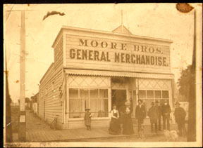
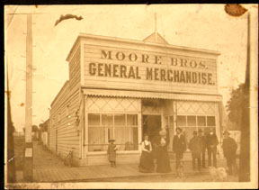

Dr. Mendoza’s Website for SJB HS is: http//archaelogy.monterey.edu/sjbhs/index.html
150th Anniversary of Statehood
On September 9th, 2000, California will celebrate 150 years of statehood. In keeping with this special year our quarterly program themes (March, June and September) will reflect the local history leading up to statehood.
For centuries the western wilderness was populated by natives who knew nothing of European culture. However, in 1769 the impact of European influence was felt by the establishment of the first Spanish mission at San Diego. Led by Spanish soldiers and Fray Junipero Serra, Franciscan missionary, Spain invaded California.
Father Serra, was a strong leader and Presidente of missions. After his death Father Fermin Lasuen was appointed Presidente. It was during his administration that Mission San Juan Bautista was established in 1797. After the death of Lasuen, Father Estevan Tapis was appointed Presidente.
The theme of our March meeting will be the life of Father Tapis and his direct impact on Mission San Juan Bautista.
Do you know where he was buried??
CarlaHendershot,Pres.
*****************************************************************
General Membership March Meeting
Sat. Mar. 4 12:00 Noon Jardine’s Restaurant: $10.00 per person. Come, and bring a friend.
Major change! Membership Meeting Dates
Carla [brilliant as ever] has initiated a date switch--not reflected in the Chamber Calendar,though. Member meetings held on the first Saturday of March, June, September, and December. June 3 Noon--VFW Hall; a Caetano BBQ `$10.00
Participants have enjoyed the last several meetings so much that they lingered with friends for hours. Suan of the Crane House and the Native Daughters are still raving about the success--success in terms of time to visit, gather new members and ideas, and for us over $600.00 in donations from enthusiasts. All of which keep us on track--doing the best we can......
Board Change: Caetano, Director
Leonard Caetano has graciously accepted a position on the Board. He will be filling the vacancy left by Barbara Franco, whose help with the launching of the Luck Museum and the many other projects in the past several years is missed! We meet the 3rd Thursday at noon at Jardines--no change in that.
Guest Book on Internet....
On your computer, this Historian and the last two are on the Internet at the address above. View the team and the lab. I can’t quit smiling about our connection with Ruben and the University after reading the comments from viewers in Guest Book. Join us there. I am proud of my years of commitment to our Luck Museum, for it may inspire someone to walk through life educating and doing good for others in the steps of Dr. Ruben Mendoza.
What’s the Progress with our Luck?
As you may have already read in the Guest Book on the Internet, installing the phone and security, sealing the concrete, and moving in are happening now. We are scheduling a paint-the-window-frames day in early February. The heat pump takes moisture out of the air; volunteers are needed to dig the dirt away from the perimeter where moisture creeps in. The mouse entrance holes will be framed over and best of all Joe Cullumber says he’s donating a five drawer fire file--complete with its contents.
We had the pleasure of meeting Doris Perry Fox when she came to Joe’s and delivered the items Louise left to us. The class pictures took our immediate interest.
Valerie Egland has prepared sketches for the Luck Museum sign, a gift from Ann Winn in memory of her mother Drucilla Isaacson, our Charter Member.
Claudia Fisher, our member and Native Daughter
you met in December, has prepared a display of NDGW historic scrapbooks
and memorabilia at SouthValley Bank to celebrate the NDGW San Juan Parlor’s
90th birthday on Feb. 23. In City Hall our files supplied photos of the
move of the Post Office--5years ago! When you are there, please take
time to look into the main room where the mural(s) of Rebecca Stone and
the San Juan school children several years ago is displayed. The
theme of each panel is the theme Carla has chosen for our programs this
year. [I know I keep mentioning the murals, but if you haven’t seen
them, you are missing a very important chronicle of our history]; those
children will be proud for their entire lives because a teacher helped
them see San Juan for what it really is “San Juan City of History.” All
organizations uphold this theme and work toward updating and keeping San
Juan, not only historic, but alive. Today is history, too.
SJBHS and City support Librarian Larkin
The City Council of San Juan Bautista has put
its full support behind this Luck Library and Museum with staff assistance,
cooperative arrangements, encouragement and money. We thank the Council
and urge all members and friends to show appreciation by volunteering just
four hours a month. Dr. Larkin has put the local history section
of the Library right behind the check out desk where it is safe and available
for research. Some books may be checked out. She has also displayed
books we have for sale (and the Chamber office has authors Clough, the
Mylar, Lydon for sale too.) Dr. Larkin has joined with Aromas and
the school libraries to form a consortium which will enable us to develop
a “digital museum” giving us access to all of the materials in all of the
libraries. This “digital museum” combined with our “hands-on” artifacts
and information will encourage the habit of “life-long learning” when visiting
San Juan Bautista.
Expanding and improving our facilities will
be made possible IF Proposition 14 is passed by Californians in March.
Every effort is being made by those of us in San Benito County to encourage
a positive result. We are going to the Board of Supervisors and the
Council for support. Our hopes are up; please join us by doing whatever
you can. Information is available at any library.
And don’t miss the chance to participate in the activities going on in the Luck Library: the success of Tell me more Ancestor Stories, Grandma author D.Dennet’s visit Feb.1, encourages us to ask Regina Phelan to come sometime. We have purchased two sets of her wonderful young person series on California. But most of all the best activity is Pat Larkin herself. Come, visit! Newsletter: GGG
Please feel free to join-- 80 1999-2000 members and 4 Yr.2000-2001 with annual dues: $10.00
Our News on the Internet with Dr. Mendoza can
be found at:
http://archaeology.monterey.edu/sjbhs/index.html
Leave a message, it will be “a hit”
in more ways than one.......... -30-
p.s. We just painted the Museum floor red....
Luck Library Hours (Revision 2/1/2000):
(831) 623-4687
Monday 10 - 8
Tuesday 9 - 8
Wednesday 10 - 6
Thursday 9 - 8
Friday 10 - 6
Saturday 9 - 5
San Juan Bautista Historical Society, P.O. Box 1, San Juan Bautista, CA 95045-0001
*Saturdays Now: March 4, 2000, Luncheon 12 noon, Jardines
The Historian
The San Juan Bautista Historical Society
1999—WINTER NEWSLETTER
HISTORY OF SAN JUAN BAUTISTA SERVICE CLUB
By Program Chairperson V.P. Carla Hendershot
Mr. Larry Cain will be our guest speaker for the General meeting on Saturday, December 4th. Mr. Cain will talk about the Service Club, which has served the citizens of San Juan Bautista for over 70 years. The organization has raised funds for many civic projects -- Scouting programs, repairing the Community Hall, and sponsoring the annual pre-Christmas bonfire, a long standing tradition in San Juan Bautista.
You are invited to bring any memorabilia about the Service Club. Mr. Cain is currently gathering this information for the benefit of the Service Club and the Historical Society.
Be sure to attend the luncheon and House Tour
December 4th, 12:00 noon at Jardines restaurant.
Lunch: $10.00....House Tour/Raffle ticket:
$2.00
Public Welcomed at Vintage Homes
The Native Daughters of the Golden West at The Adobe Home 203 4th Street and Susan Brady at The Crane House 401 Second at Polk Street are open to the public for tours and refreshments by 1:30 Dec. 4th. According to Charles Clough in SAN JUAN BAUTISTA The Town, The Mission, The Park, The Native Daughters' Adobe Home, originally the Pico Adobe, was purchased and restoration begun by 1936 which was 100 years after it was built by Ralph Pico, a Basque sheep raiser and builder. Crane House (1835) is credited with being the first wood frame house in California built by Americans -— by the McMahon family who visited there last year.
These two homes and the Service Club are written about in Clough's chapters, "And the Town Moved On" and "Community Spirit." Lee Gularte, Soledad, Monterey County Historical Advisory Commissioner, will display some of her vintage fashions in both homes. Refreshments will be available for a $2.00 raffle ticket purchased at either Home. Raffle prize will be a Sleznick Bicentennial card. Winner will receive it by mail.
Native Daughters will display and have for sale items designed especially for them by another local artist Valerie Egland who trained with Alex Zeller. The Society will have for sale the cards and the books we sell. Both the Luck Library and the Luck Museum will be open for visitors to view all of the changes going on in this the last months of the last year of the 20th Century.
The general public is invited to attend any and all of these activities. Our Luncheon is at noon on Dec. 4th and the Homes are open 1 - 4 pm. Chamber of Commerce Merchants' Holiday Open House and the State Park Living History Day are that first Saturday, too. The Service Club Bonfire is December 17th.
Vintage Photos and More on Internet
The changes in the Library are phenomenal. The shelves in the check-out corner are to be the Local History section. Space is there for the many books members have promised to give us when we "have a place." Now is the time; we have the place. Mrs. Ron Olmstead is still trying to get the Bancroft Index. The Native Daughters have purchased history books suitable for the juvenile readers. The Library Auxiliary Barbecue was a success; that money will be used to stock the library; all of the used-book sales goes to the Auxiliary, too. Patrons are buying books as they never have before; they are in the Library foyer for anyone to peruse and purchase. Since much of our material is out-of-print or one-of-a-kind hand-written documents, donations are our only source for that information which is being welcomed into the Library itself for patron use.
Occasionally, when I am in the Library, a student needs something from the Bancroft bookcase for a report on the Missions. That precious look of a 4th grader as she/he handles the over-one-hundred-year-old Bancroft book, and the other "artifacts" in the drawer is worth every volunteer moment I have to spend. Come to think of it, the parents helping them are probably not 35 years old and are thrilled to use the old books, too. I can't resist telling them the story of Dr. Ruben Mendoza who came here as a fourth grader and was inspired to be the person he is today.
To become Vintage Oral Histories
In the Library each week from 4-6 Thursdays, Dr. Mendoza arrives from CSU Monterey Bay with student Carolina Victoria Sordia, a huge camcorder, and a tiny brand-new hand-held digital camcorder--to record/film our "vintage" personalities under the direction of Carla Hendershot. On tape are Joe Cullumber, Leonard Caetano, Bonnie and Kenny Laverone, Bud and Renee Holthouse, and Enos Silva. These oral histories are added to those who were able to talk last year in the Mission series, Mary Sellen, being only one. Interviews take place in the middle of the Library activities area where we also have Louise Perry and John Baumgartner on tape. Carla plans to add a history/interviewee every class meeting in the next year. We can see Carolina Victoria's graduate work next May at the "Capstone Festival." and on the Internet as soon as possible.
The students', Ted Richter and Vahina Buduoani, and our work is slow-going because each vintage photo has to be taken from its file, and plastic folder where it has been for the past six (to 36) years, given a "fresh" accession number, photocopied, that photocopy numbered, annotated using research material available in the Pearce and Clough books, punched, put into a binder; the original "vintage" print scanned, and put back into its plastic holder, and refiled. We can use some volunteer help to while away a rainy afternoon. After being scanned, the students enter the data, i.e. the annotations and any other information we want on it for the Internet.
From the Internet [is that capitalized?], we will be able to share our materials with who ever asks. The image on the computer screen is not "sharp" enough for reproduction; that will be the potential moneymaker for us--selling the "sharper" prints for a fee to be decided. We are going to need regular help with this museum project. It's been in the hands of a few of us so far; we need more hands for the future. Vintage is good, but so is a fresh start with fresh faces, and hands. Can you give us your help? A look at what's going on can be found on the San Juan Bautista Historical Society’s portion of Dr. Mendoza's web site which is located at:
Vintage Hands Keep Working and Sharing
Volunteers have painted the back Luck Museum rooms and washed--almost--all the windows. The Rotary Club is going to finish the painting. Sentry Alarms System is providing the security. Enterprise Electric donated the fan. Valerie Egland is working on a layout for the sign which Anne Winn is donating in memory of her mother Drucilla Issacson, Charter Member. We have most of the office kinds of things. We need mundane things like a broom, dust pan, waste baskets, paper towels, instant coffee, cups, Windex, chairs, a meeting table, a six foot ladder...You can bring them to our meeting. And did I say....help...
Bonnie Laverone brought the gift of Nonnie Bonnifacino--the doorbell from the Luck Victorian. Chris Warren stopped me on the street to exclaim her delight at meeting the Pearce family who has a video of the San Juan Canyon to share. Pepe Espinoza showed me a trunk which is pictured in the Pearce East of the Gavilans while Ted Thoeney, Native Daughters' newest Sister, and I were trying to save some of deAnza Adobe treasures from the rain coming through the "roof." Gas Station memorabilia, we do need. The Horleys will know how to help with that. [A deed is ready for donors.]
The City is not planning to do any landscape changes until next year; but Harvey Sandoval is already thinking.. That's when the Luck Library may get a face lift--outside--to match the lift inside--the Larkin Lift.
Don't miss the fun we've been having when the Program Chairperson calls on all of us to share our memories; guests are taking notes!
Enthusiasm for our Christmas event began several weeks ago with a phone call from new member Jo Harth from Morro Bay. She made reservations for herself and her husband for the luncheon so she could be sure to see the Crane House. I had met her in the Library when they came to find information on the cemetery where they had seen that strange "wood grave marker".....[It's been 4 years; we have Richard to thank for his keeping the Society together since its Charter in 1965 and giving it a home for years, too.]
Reservations are needed. We could use some homemade cookie volunteers too. Let us know if you can bring cookies and/or come to lunch. Carla says, call her, leave your message; pay at the door. (831) 623-1577
For newsletter recipients who think our fiscal
year begins January 1, 2000 [not 7/1/2000, which it does]; please feel
free to send a late membership fee. '99 means you've joined the other 73
members. We send to 180 people.
Newsletter: GGG
This Newletter can be found on Dr. Mendoza's
Web site. Let us know if you can access that website, we can save the stamp
next time.
New Library Hours: (831) 623-4687
Monday 12 - 8
Tuesday 9 - 8
Wednesday 10 - 6
Thursday 12 - 8
Friday 10 - 6
Saturday 9 - 5
San Juan Bautista Historical Society
1999 WINTER Season Historian
P.O. Box 1
San Juan Bautista, CA 95045-0001
Please make reservations:
(831) 623-1577
Saturday
December 4, 1999
Luncheon: 12 noon
Open Houses 1:30-4
A Look forward…as we harvest the treasure of the 20th Century.
What Do You Have in Store for Us?
Program Chp. V.P. Carla Hendershot
Our September 16th program will be your time to shine!
In anticipation of the opening of the Luck Museum, we are on a “treasure hunt” for family histories, particularly in San Juan Bautista. At this time we are looking to you, our members, families, and friends, for your help. Enclosed is a survey form we are asking you to complete and return to us. We look forward to seeing you at our quarterly membership meeting. At 12:00..at Jardines..Thursday, September 16th…$10.00. And while your marking the calendar -- reserve Saturday Dec. 4 for the next meeting.
On September 16th…
Look forward at lunch to sharing answers to the survey. We will be talking about what we hope members and friends will be holding for us until we open the museum doors. I picked up a few small calendars as souvenirs for our members form Mission Shoe Renewal during its final sales days for those who want them. The Cravea family gave us the Liar’s Bench for our Museum. (Alas, Josephine is now gone, too.) Of course, it is Bud and Rene Holthouse who actually picked up the Bench and are storing it for us.
Look forward after lunch to Barbara Franco and Joe Cullumber sharing with us the progress of the Museum as we inspect it. Weather permitting we will have our dessert there—remembering the 1999 birthdays. An update on the Luck Museum finds that we have used and/or committed the $19,000 the Library Auxiliary has been donated to this tremendous cause.
Look forward to hearing the progress we are making toward the 21st Century with the help of students from Dr. Ruben Mendoza’s class who are working with us to prepare our materials for the Museum opening this year and beyond. We start the classes at the Library Thursday September 2nd at 4pm in the storeroom. With his help we will discover how to copy materials so that the owners can keep the originals if they wish, We will catalogue information on where materials may be found so that we become a living bibliography for researchers. We do not believe in doing the research, that would take away their fun.
Look forward to touring the Luck Library where the new Director Pat Larkin has initiated many changes-not the least of which is that the Library is open 6 days a week.
New Library Hours: Mon. 2-6 Tu. 10-8 Wed. 10-6 Th. 12-8 Fri. 10-6 Sat. 9-5
New Programs are to be initiated with the aid of volunteers—as we come forward to make the dreams come true. City residents will be asked to respond to a questionaire.. {If you don’t live here, let someone know what you would hope can happen at the whole Luck Library and Museum Park. Send us a comment so we can include all ideas.}
September 25th……..and……Beyond………
Mark your calendars for the annual Auxiliary fund raiser for the Luck Library—Chicken BBQ under the management of Member Leonard Caetano and Crew is served September 25th, 1999 from 4:30-7:30 at the VFW Hall. Take out available, home-delivery to shut-ins, and Raffle of donated items from sponsors merchants and friend in town. Tickets at the Library..$10…half is your donation.
[Editors comment:] I, for one, feel that I am forever grateful to the Auxiliary; the Historical Society is the beneficiary of the years of Auxiliary members’ faithful work… During the years those funds were growing, the Auxiliary also put many hours into raising funds for the books and materials to augment the Budget of the Coty which is the sole sponsor of the Luck Library. Now, with Nora Conte and Pat Larkin at the helm grants are being sought. This BBQ will benefit the Library.
Our support will help say Thank You to the Auxiliary and the City for keeping the doors open. Volunteers are appreciated in the Library in any capacity. The Saturday hours will coincide with our Museum hours so that users may access both buildings and materials on their visits. The Library has launched a campaign to strengthen the California research section where we will house some of our materials so that they will be available during all of the Library hours under the Librarians’ supervision (yes, Librarians’ two are on the job at all times.) It is toward this end that a couple of us from the Historical Society got together and initiated the volunteer effort. The Library was closed to the public most of the week as an opportunity to weed the shelves and hold a book sale for the City. Several of us donated over 431 hours to this cause: and will continue to volunteer in the Library as our time allows. This weeding… as it turns out,… was a required first step before applying for a grant.
Look forward, Does it sound as if we are ready to say “Guess what we have in store for you?”
It is with the pleasure we get from volunteering in mind, that, at the Society Board Meeting in July, we asked Barbara Franco to write about volunteering in our next newsletter. She should know…while we were at the Library, she was shouldering the Luck Station repair work [while also chairing the Mission Fiesta in its effort to raise the $12,000 it did this year.]
We enjoyed hearing about “the spirit of San Juan” at Dona Esther last March when 35 of us sat down to our membership meeting with many familiar faces in the community coming to our luncheon for the first time. “San Juan turns out.” Year after year, after year.
When you tell us what you have “in store for us,” remember, it’s not just your artifacts and information we need, it’s your time, too. Keep us in mind as you plan your activities for the years to come. We are not forgetting the several members and other community spirited people who have already said they will help in any way they can.
December meeting – We have been invited back to The Crane House by Proprietor Susan Brady. We are looking for other homes to visit as well. Suggestions? We look forward……..
Perhaps you can use these statistics about
it. We had 76 members last year; and 54 so far this year with 2 renewed
through next year, two—too---to---2001. The Newsletter goes out to 150
people, at least, either by mail or hand delivery. Among the Organizations
that get the letter are the VFW, VFW Auxiliary, the Native Daughters, the
Chamber, the County Historical Society, the Mission, the State Park. We
know that other recipients share with their organizations,--so one of the
things you can do for the Society is talk about it. When you have question
and/or comments—good, bad, indifferent, let us know. Constructive criticism
is good—especially at this time when so many changes are being made.
Yesterday, Member Harvey Sandoval and I walked
around the Luck Museum site and gathered our thoughts on the master plan
for landscaping. This would include his idea for re-creating the San Juan
Central in the park and placing the Jim Jack cabin near it. We talked about
where to put the sign that we have a member contribution for; he’s in the
landscaping business. I talked again with Chuck Wood who will spear-head
the Jim Jack’s cabin reroofing. Although, he is busy starting a new business
for the State of California, he is still willing to volunteer his time.
We are concerned about the lone pear tree left standing below the mission. It was brought to our attention thanks to a photo sent to us by Edie Franz, Proprietor of the Fault Line in the Breen house on Franklin St.
We are slowly but surely getting all of the15 file drawers in order to be placed in the Luck Station. Joe and Frank Luchelli, and Ken Laverone are thinking of redoing the inventory of who lives/works in each building. These community members help us know that the community will be ready so when asked to help with the next phase of providing for our needs as the Luck Museum opens its doors. .
Our goals are clear…..
We Look forward as a research organization in search of materials that help people in their research, and … as a museum where artifacts can be shared in our displays.